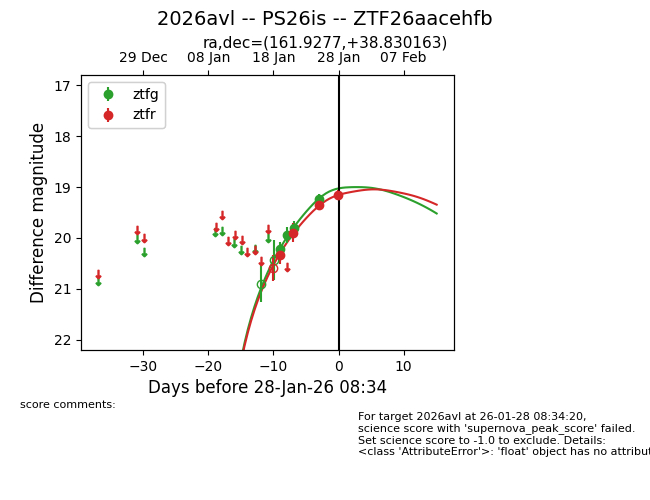
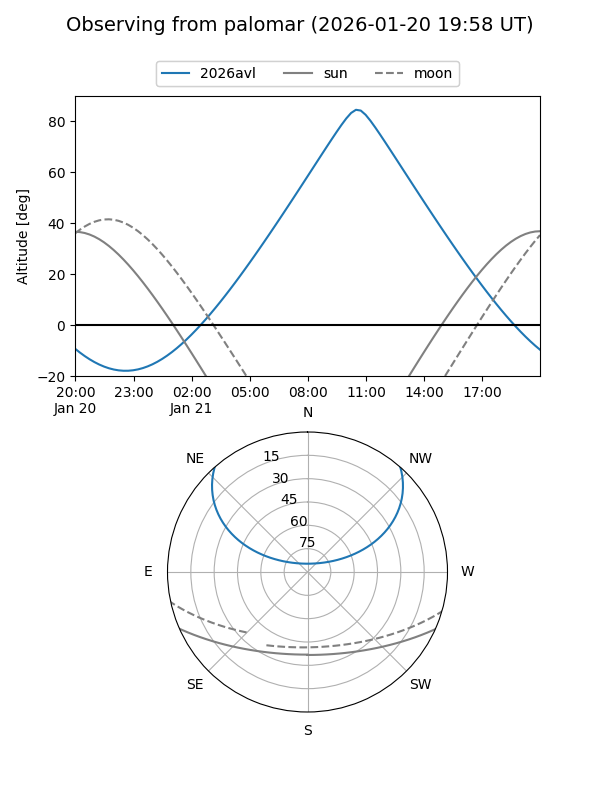
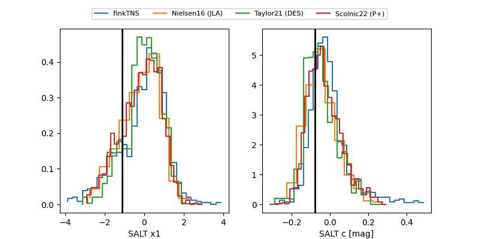

2026avl
Target 2026avl at 2026-01-21 09:11
Aliases and brokers:
FINK: link
Lasair: link
ALeRCE: link
TNS: link
YSE: link
alt names
ZTF26aacehfb (ztf,fink_ztf)
2026avl (tns,yse)
PS26is (panstarrs)
Coordinates:
equatorial (ra, dec) = 161.9277,+38.83016
equatorial (HMS+DMS) = 10:47:42.65,+38:49:48.59
galactic (l, b) = (180.6113,+61.71650)
Flags:
Photometry:
last ztfg=20.21, ztfr=19.90
1 ztfg, 2 ztfr detections
Lightcurve

Visibility


Additional plots
